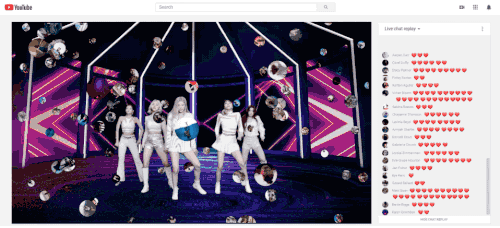

Scroobly is a web tool that uses machine learning powered pose and face tracking to allow people to create simple character animations by simply moving their body in front of a webcam.
Shuwa Gesture Toolkit is a framework that detects and classifies arbitrary gestures in short videos. It is particularly useful for recognizing basic words in sign languages. Shuwa Gesture Toolkit also allows you to train new gestures, so it can be trained to recognize any sign from any sign language in the world.
Worked with Matt Steffanina to create an interactive dance application that encourage fans to learn new dance moves, and share an AI composed video of them dancing together on social media. We picked the best dance submissions to be included in the first all digital YouTube FanFest in 2020.

YouTube FanFest Fan React
Launched an interactive experience with YouTube FanFest 2020 for fans to be part of the show through playful visualizations triggered from the live comment box. Featured with various performers including K-pop girl group ITZY and Indian rapper Emiway Bantai.
LipSync
Partnered with Australian singer Tones and I to create an experimental lip synchronization game using face tracking and Tensorflow.js. Also used in Miley Cyrus' "Miley In Layers" virtual concert campaign in 2021.
Pixelopolis
Miniature city installation promoting AI and camera features in the Pixel 4 phone launched
in the SoftBank flagship store in Omotesando, Tokyo.
Google Daydream
Experimental XR technology at Google.
Cozmo
AI Robot companion who can't wait to play games with you.
Anki OVERDRIVE
Robotic battle race cars for iOS and Android.
Osmo
Digital + physical hybrid tabletop games powered by computer vision.
Leap Motion
3D hand tracking based user interfaces.
Perspective
First-person game that blends 2D and 3D to solve perspective puzzles.